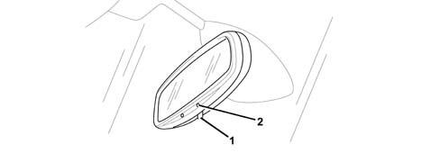

ELECTRO-CHROME INTERIOR REAR VIEW MIRROR
- Path
- Descriptions > 55 ELECTRICAL EQUIPMENT > 5505 INSTRUMENT/GAUGE ELECTRICAL CIRCUITS > 5505A MULTI-FUNCTION COMPONENTS > ELECTRO-CHROME INTERIOR REAR VIEW MIRROR
- Kind
- system description
- Applies to
- all engines; all production periods
- Interactive page
- https://sloeber94.github.io/elrnDB-fUlss/en/#/179000416
Applies to: all engines; all production periods
The vehicle is fitted with an electro-chromatic mirror whose colour adapts automatically depending on the brightness for day or night use (this makes it possible to prevent the glare produced by the headlamps of a vehicle behind).
To activate the automatic mode, with the ignition in the ON position, press the button located on the rear view mirror and the LED will signal that it is switched on.
In order to ensure optimum visibility during manoeuvres, the interior mirror switches to automatic mode each time reverse gear is engaged.

- 1 - activation button
- 2 - LED
3-way blue connector
Pin | Function |
|---|---|
1 | earth |
2 | + ACC |
3 | reverse gear information |